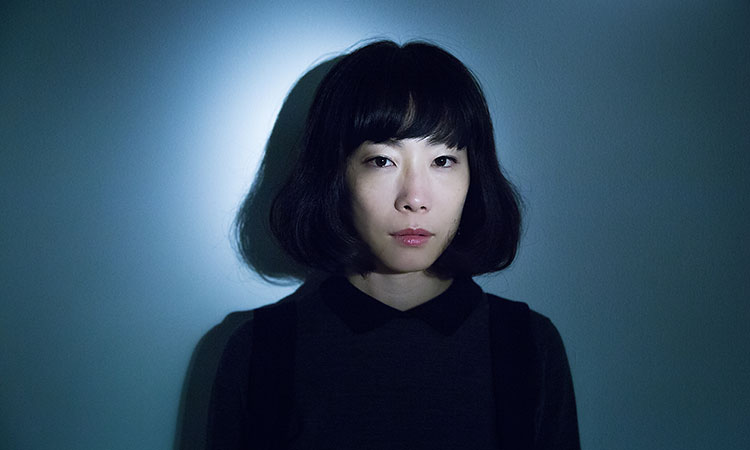
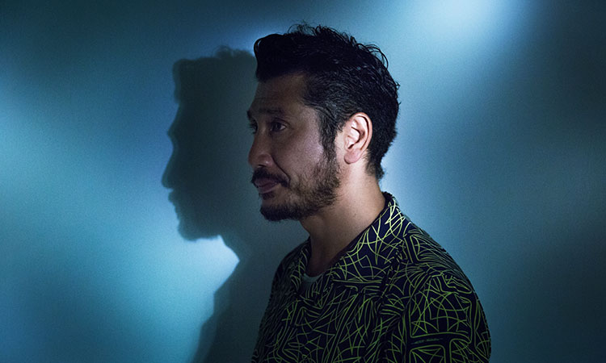
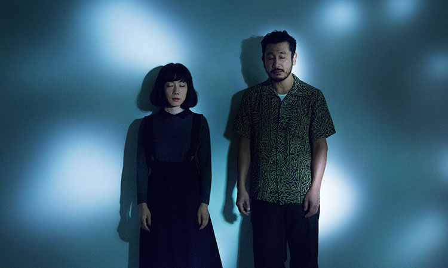

数多くの映画プロデュースで知られる越川道夫が監督として初めてメガホンを取った映画『アレノ』は、原案となったフランスの文豪、エミール・ゾラの小説「テレーズ・ラカン」の舞台を日本に置き換え、湖に落水して行方不明になった病弱な夫の発見を湖畔のホテルで待つ妻とその愛人の男の２人の情事を16mmフィルムならではの質感を持って描く官能的で幻想的なメロドラマ。これまでのコメディリリーフ的な印象を覆すようなファムファタールを演じる女優、山田真歩と、その愛人役を演じる押しも押されぬ個性派俳優、渋川清彦の２人に話を聞いた。
したくなったらして欲しいし、言いたくなったら言って欲しい。こっちは待つからってことをずっと監督は言い続けていたんです。（山田）
「体当たり」という言葉を使われがちな作品かもしれないですが、内容自体は淡々とした流れの中に、静かなエモーションを感じるものでした。
渋川：
実はまだ出来上がりを観てないんですよ。
山田：
出演作を観ない主義ですか？
渋川：
主義ではないんだけど、最近、あんまり観れてなくて。なんか観なくてもいいかなぁとも思い始めてきて（笑）
山田：
それは観てください（笑）
エミール・ゾラの小説「テレーズ・ラカン」が原案になっていますが、原作から触発されるものはありましたか？
山田：
心に引っ掛かる文章がいくつもあったので、それを膨らませたりはしましたね。もちろん台本の方を読み込みましたけど。
渋川：
僕、読んでないんです。読んでないというか、原作についてあまりよく分かってなくて。「テレーズ・ラカン」って題名も今、初めて知ったくらいで。
山田：
本当ですか（笑） 驚愕しました。
渋川：
いや、原作があるのは聞いてたけど、「テレーズ・ラカン」っていうのは知らなくて。不倫や愛人の話っていうのは知ってたけど、うん。
山田：
凄いですね。それであんな懐の深いお芝居が出来てたなんて。
お２人はこの映画の顔合わせの時が初対面だったんですか？
渋川：
そうですね。初めてでしたね。
山田：
優しそうな人だなって思いましたけどね。
渋川：
え、よく分かんないけど（笑）
山田：
第一印象はそうでした（笑） でも、リハーサルで私がKEE（渋川）さんの服を脱がした時に、上半身に刺青があってギョッとして。
渋川：
あれは面白かったね。
刺青は実際の渋川さんのものですよね？
渋川：
そのものですね。邪魔になるかなって思ったんだけど、越川監督がそれを活かすって言われたので、少しも隠さずに。ああいうのはそれだけで意味を持ったりするから、いいのかなって思ったんだけど、監督はそんなことは別に気にしてなかったみたいで。
確かに人物のバックグラウンドというか、まず役に名前も無いですからね。ところで、この映画は16mmフィルムで撮影されていますね。
渋川：
16mmに特に思い入れがあるということじゃないけど、やっぱり最近だと珍しいじゃないですか。何か理由があってというわけじゃなくて、感覚的なことですけど、嬉しさはありましたね。画になった時の質感もいいし。
山田：
私は16mmでの撮影は初めてでした。昔の映画を観ると独特の湿度があって、食事のシーンも食べているものがすごく美味しそうに見えたりして。それがいいなって、憧れのような思いがずっとあったので、嬉しかったですね。
映画に合った湿度がありましたね。濡れ場も仰々しさはなくて、ありのままの２人の姿が映し出されてるようでしたけど、越川監督とは、撮影前も撮影中も何度も何度も話し合われたそうですね。
山田：
台本ではト書き１行しかないところを即興で膨らませて長くなったシーンもあったんです。台本には「ベッドで男と女が寝ている」としか書かれてなくて、それをどう演じるのかは現場で皆で決めていくようなやり方で。かっちりは固めなかったですけど、何度かリハーサルはしましたよね？
渋川：
リハーサルは沢山しましたね。何かね、たぶん、真歩ちゃんも僕も元々が生っぽいんですよね。
山田：
越川監督も決められたことをただ守るという芝居に抵抗があったようで。例えば、歩いていくシーンでも、「今、歩きたくて歩いた？ それともやらなきゃいけないから歩いた？」って監督はそこに拘るんです。他にも目で芝居をしないでほしいとか。撮影初日にそういうことを言われました。したくなったらして欲しいし、言いたくなったら言って欲しい。こっちは待つからってことをずっと言い続けていたんです。
渋川：
芝居をしていると決まりきった型みたいなものが自然と出来てくるところがきっとあって、そういうのは要らないってことを監督は言ってたのかなって思いますね。
山田：
最終的には、KEEさんの目を見てれば何とかなるんじゃないかって体や感情の動きは任せてしまったような気がします。自分がこうやろうって演じるのではなく。

まあでも、根本的なことを言うと、答えがないですよ。渦巻いているものだけを描いている映画というのかな。（渋川）
川口覚さん演じる、亡霊というか幻影のような不確かな存在の「夫」を相手に芝居をしていくのも簡単ではなかったんじゃないですか。
渋川：
亡霊とか幻影とか、そこまで考えてなかったのかもしれないですね。
山田：
存在としては異質なんですけど、誰もそれに対してツッコミをいれずに普通に共存してるんですよね。「妻」には見えてるけど、「愛人」には亡霊として映ってるのかもしれないし、そういう両面がある。様々な主観が混じっていて、どの人の視点で見るかによって正解は違うと思うんです。川口さんはそういう微妙な立ち位置を飄々とこなしてしまう不思議な存在感のある方でした。
冒頭で、湖に落ちて沈んでいく「夫」が、彼女を…と言ったような気がするという「愛人」の台詞があって、それが繰り返し語られます。
山田：
妻も「あの人は沈んでいく時に私の名前を呼んだの？」とずっと拘って気にしていますよね。死ぬ最後の瞬間は、たぶん人生で１番大切だった人を思い出すと思うんです。だから、夫が本当に自分を愛してくれていたのかどうかを確かめたかったのかな。
「夫」が、渋川さん演じる「愛人」に託した言葉でもあり、「愛人」の願望が生み出した想像の言葉なのかなとも感じたんです。
山田：
それはあるかもしれないですね。「夫」目線から考えると。私はどうしても「妻」目線で考えてしまうので。
渋川：
え、その言葉は俺が言ったんだっけ？ 誰に言ったの？
山田：
（笑） 救助してくれた人に向けて言っていましたよ、確か。
渋川：
あ、そうか（笑） だって寒いんだもん。
山田：
どういう言い訳ですか（笑）
渋川：
今は思い出せなかっただけで、現場では考えてましたよ、もちろん。
何だかすいません…（笑） 「夫」の亡霊が見えてしまうくらい２人は何にとらわれていたんでしょうか。
渋川：
つまり、３人は同級生で幼馴染みなんだけど、男を取るか、女を取るかって難しいじゃないですか、たぶん。そこは難しいですよね。まあ、罪悪感はあったでしょうね。
山田：
２人の関係は、病気の夫が生きてたから成り立っていて、死んでしまったら崩れてしまった部分もあったと思うんですよね。
渋川：
やっぱり罪悪感しかないですよね。子供の頃にお医者さんごっこをしていたような話なんかもしてるし。まあでも、根本的なことを言うと、答えがないですよ。渦巻いているものだけを描いている映画というのかな。

その通りで、確かに野暮な問いかけだったかもしれないです。撮影は１２月に５日間で集中的に行われたそうですが。
渋川：
クリスマスの頃でしたね。本当に寒かったね。
山田：
湖の中でスタートがかかるまで浸かって待機していて、引き揚げられたら身体の震えは止まらないし、寒くて声も裏返っちゃって。こんなはずじゃないのにって（笑） 当初は夏に撮るって話もあったみたいなんです。
渋川：
役者としては夏より冬の湖の方が嫌だよね（笑） でも、結果的に冬の方がこの映画に合ってるなとは思いますね。ロケ地は相模湖だったけど、雨もすごく降ってたよね。
山田：
初日はずっと雨が降っていました。湖で撮ったシーンはほとんど。
渋川：
それも映画に合ってたと思う。結果、すごくいい感じになったよね。
山田：
あれがピクニック日和だったらだいぶ印象変わりますよね（笑） 最初の台本では、湖じゃなくて、海の設定だったんですよ。
渋川：
湖の方が閉塞感があるし、湖ってちょっと恐いしね。それも映画の世界観に合ってるなって思いますね。
澁谷さんの奥さんの夏海さんの吹くホルンが好きで、映画の撮影中にあるシーンを撮ってる時にそのホルンが鳴ったんです。（越川）
その世界観を彩る澁谷浩次（yumbo）さんの手掛ける音楽も抜群にハマっていますよね。
山田：
そうですね。音楽については越川監督の方が詳しいと思う。
渋川：
僕も出来上がりをまだ観てないわけだし、ここは越川監督に聞きたいよね。
では、（脇で様子を見守っていた）越川監督にも少しお話を聞かせて頂きたいです。
越川：
元々、僕がyumboを一方的に好きだったんですけど、Twitterを介して、澁谷浩次と知り合ったんですよ。（越川氏がプロデュースした）『楽隊のうさぎ』を観てくれてたみたいなんだけど、澁谷さんは音楽を聴くよりも映画が好きでずっと観てるような人なんです。僕は、澁谷さんの奥さんの夏海さんの吹くホルンが好きで、映画の撮影中にあるシーンを撮ってる時にそのホルンが鳴ったんです。それで音楽を澁谷さんにお願いしようって決めて電話をしました。いつかはyumboの音楽で映画を撮りたいっていう思いはあったので。
撮影中にそういう直感が働いたというのはドラマがありますね。
山田：
撮影前から音楽決めても合わない場合もありますもんね。この映画の台本を読んだ時に管楽器とは想像しなかったですね。確か撮影前に監督に「この作品はどんな音楽が鳴りそうですか？」と聞いた時も「まだ分からない」っておっしゃってたし。編成は全員、管楽器なんでしたっけ？
越川：
澁谷さんだけがピアノであとは管楽器だね。チューバとサックスとフレンチホルンとトランペットなんだけど、サックスは、「火星の庭」という仙台にある古本屋の店主なんですけど、吹くのが25年ぶりの人なんです。トランペットを吹いてる人も楽器初めて２ヶ月だったりして（笑）
渋川：
へえ、面白い。それは映像を観てから作ってもらったんですか？
越川：
そうそう。どのシーンにどんな曲を付けるかって澁谷さんとメールでコミュニケーションしながら。だからこの間まで実際には会ったことなかったんだよね。ライブにも行ったことがなくて。
山田：
死んだ夫が現れる時の音楽とかマッチしてましたよね。
越川：
映画音楽を演奏している録音風景のドキュメンタリーがあるんだけど、それがかなり笑える。みんな吹けないわけだから（笑）
渋川：
それ面白そうですね。25年ぶりに吹く人と、吹き始めて２ヶ月の人ですよね。すごいよね（笑）
越川：
それも機会があれば観てほしいですね。というか、こんな話に終始しちゃって大丈夫でしたか？ （笑）

貴重なお話をありがとうございます。では、最後に映画を観て頂ける方に一言ずつ。
山田：
特にきっちりとした物語がある映画ではないので、妄想を働かせて楽しんでもらえたらいいなって思います。妄想で正しいのかな？ （笑） 答えを聞かれても私も正確な答えは分からない、そういう映画だと思うので。
渋川：
映画全般がそういうものかもしれないよね。映画は答えがないというか。だから、何でもいいので、「わけわかんねえ！」でもいいから、観た人の中に何か引っ掛かる部分があればいいかなって思います。